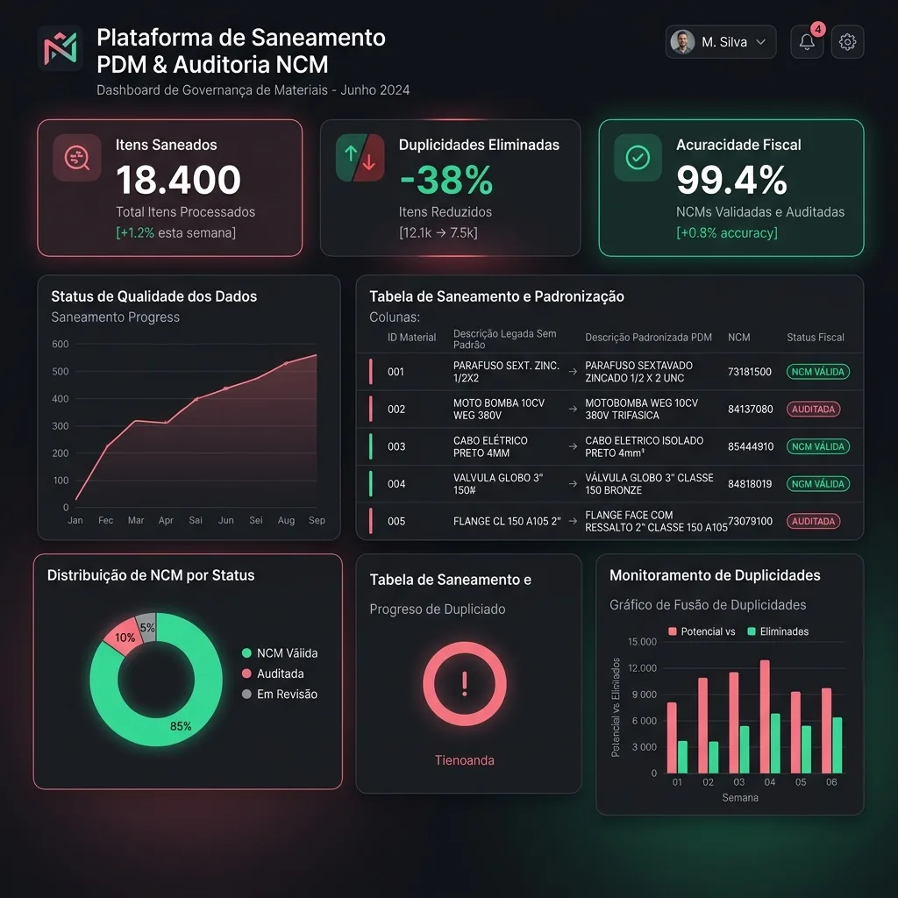

Saneamento de Cadastro de Materiais & Auditoria NCM
Metodologia e rotina automatizada para saneamento de bases legadas de materiais em almoxarifados industriais, unificando duplicidades e padronizando a nomenclatura PDM.

15.000+
Registros de insumos higienizados
-18%
Redução no inventário fantasma
100%
Classificação fiscal auditada
cleaning_services Importância do PDM na Gestão de Estoques
Descrições genéricas no cadastro de materiais (ex.: "Rolamento", "Parafuso inox") geram compras duplicadas e itens parados no estoque. Com a implementação do Padrão Descritivo de Materiais (Nome Básico + Nome Modificador + Características), a empresa obteve total acuracidade no planejamento de compras.
terminal Antes & Depois: Higienização Real via Regex
O algoritmo aplica um dicionário de substituições sobre abreviações legadas e normaliza o texto antes de comparar materiais, permitindo detectar duplicidades que uma busca exata nunca encontraria:
PARAF SEXT ZINC 1/2X2
PARAFUSO SEXTAVADO ZINCADO 1/2X2
def padronizar_descricao_pdm(descricao_bruta: str) -> str:
"""Aplica regras de higienização para o padrão PDM (Nome Fundamental + Modificadores)"""
texto = descricao_bruta.upper().strip()
texto = re.sub(r'\s+', ' ', texto)
substituicoes = {r'\bPARAF\b': 'PARAFUSO', r'\bSEXT\b': 'SEXTAVADO', r'\bZINC\b': 'ZINCADO'}
for padrao, substituto in substituicoes.items():
texto = re.sub(padrao, substituto, texto)
return texto